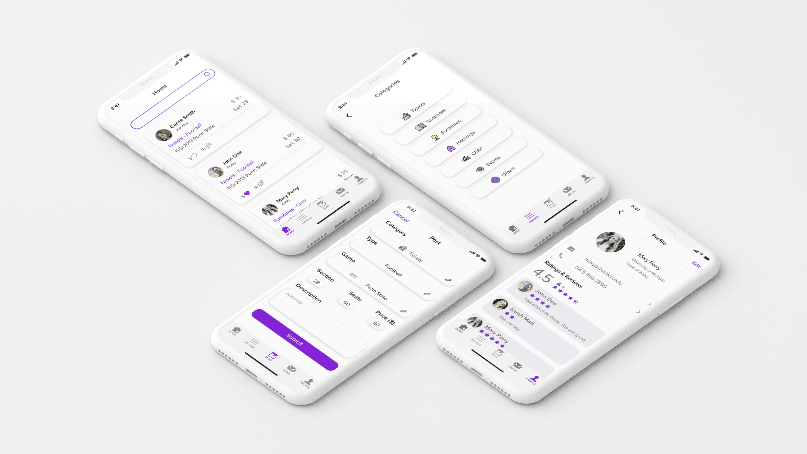

Share U
User Research + UI/UX Design
Overview
Design Statement
One of the issues that exists within college communities is the difficulty of spreading information. Our team has experienced this first hand, especially being a part of such a large college community. For example, there is difficulty spreading information about new clubs on campus, club information sessions, events, fundraisers, resources, etc. As of now, Facebook is the main platform used to post about college events or information. Facebook has, for example, “Class of 2019” group, and each grade belongs to their class Facebook group. So, if someone wanted to post about a fundraiser or a couch they’re selling, they would post within their class group. This limits Facebook users to see only what is being posted within their grade and abandon non-Facebook users. The Facebook group isn’t designed in categories that is shareable, rather it is just a jumble of information.
There is an app called “Nextdoor” but it doesn’t exist for college campuses. This app allows people to post about different things and search within categories. It would be interesting to see a college version of the app on campuses. Ultimately, it is sometimes difficult to be involved in campus activities because of the lack of knowledge and I believe a platform to address this issue will beneficial.
Role
UI/UX Designer
Research
- Competitive Analysis
- Personas & Scenarios
- Design Space Analysis
- Paper Prototyping
- Hi-Fidelity Prototyping
- Usability Testing
Tools
- Adobe XD
- Adobe Illustrator
- InVision
Research
Competitive Analysis
Our current design space deals with the lack of an online platform that is specifically catered to the purpose of communication within the community that reflects the entire offline campus space, such as posting events, trading used goods. The current competitors do not reflect user needs completely. Some tools were targeted towards a different audience, while others were created with a different purpose in mind. To understand how these competitors are approaching the current design space, we decided to look at 7 different competitors on five factors: categorization by topic (tags, categories), engagement method (reactions, comments, DMs), navigation (menu bar, buttons), search (sort, filter), and profiles (useful information for current demo).
The comparative analysis helped us understand how the other online “bulletin board” platforms are working in place. It gave us not only ideas on how to approach our solution but also what to not include in our solution. We also realized that some of the factors were not the easiest to compare since these platforms were intended for a different audience. With this in mind, our group landed on some fundamental ideas on the structure of our design that is intended to create an online space for better communication for college students.
Personas & Scenarios
We developed four personas that consist of two primary, one secondary, and one anti personas. By selecting different goals and frustrations, we wanted to represent a diverse community. The primary personas, however, represent the most focused group students who are incoming freshmen and are looking for football tickets, which is the main feature of our application.
Scenario 1: Jon Douglas
Jon is a freshman from LA. He is both excited and nervous to start his life in college, but most importantly, he is looking forward to going to the football games. He wants to go to the game against MSU on October 20th, but doesn’t have a ticket yet. In order to buy a ticket from another student, he opens the tool and goes to the student buy and sell section. There, he is able to select the ‘football ticket’ category and the ‘MSU game’ tag to find all the offerings for the ticket. He then sorts the offers by price, where he finds the cheapest ticket for 30 dollars. He clicks the seller’s profile and quickly scans it for any signs of scamming, and messages the seller to buy the ticket. Once the seller responds, he’ll arrange to meet up on campus to buy the ticket from him.
Scenario 2: Mary Perry
Mary Perry is a senior who recently moved from into a newly furnished apartment. Since the couch in her previous apartment was hers, she wants to get rid of it by selling it to another student on campus. She takes a picture of the couch and opens the tool to make a post on the ‘buy and sell’ section. She makes a new post, selects the “furniture” category, uploads the picture, and writes a short description regarding its condition. She then adds the “couch” tag and submits the post. Now she will wait until another student sees the post and messages her about the offer.
Sketches & Storyboarding
Before diving into designs right away, we started sketching alternative solutions to the design statement we created. All team members took time to create unique 40 solutions each with caption. Some of the interesting solutions we came up with are VR and AR where users can try placing the furniture in their house or check the view of the football seat for a specific ticket. After creating alternative sketches, we created storyboards for the scenarios of Jon Douglas and Mary Perry that we developed during the personas & scenarios stage.

Design Space Analysis
We reviewed our design project’s results, including our competitive analysis, sketches, scenarios, and storyboards. Following the QOC approach, we worked through the design considerations for one critical feature of our project. By considering the trade-offs between different options, we produce a Design Space Analysis comprised of 3 QOC’s (Question, Options, Criteria). We highlighted the preferred option we would adopt, and explained the rationale for adopting it.
Q1: How should the categorical items be presented?
Option: List
We wanted to leverage this opportunity to solidify our navigational structure and overall information architecture. The first question we asked was how the categorical items should be presented. Understanding this aspect of the application would set the basis for how users would navigate between each category. Our options included Lists, Grids (also referred to as Dashboard-style), and Tabs. While these are all common conventions, we decided that Lists would be the best option since it would take up little space while presenting items in an easily readable manner. On the other hand, although Tabs did have more positives aspects, we decided that higher interactivity - while it may potentially be a more engaging experience - may also require more effort from the users. Therefore, we chose to avoid it and proceed with the List option.
Q2: How should menus be presented?
Option: Toggle/Hamburger
After deciding how the categories should be presented, we felt it was natural to decide how the said List menu should be accessed. We assessed two options through the QOC process: the Permanent Home Page and the Toggle option, or more specifically, the Hamburger Menu. The former of the two would involve having a home page that users would navigate from, and would require users to navigate backwards in order to access again. The Hamburger Menu would involve a button on the upper left corner of the screen that would make the list menu visible upon selection. We decided upon the latter option for a couple reasons: for one, having the categories on the home page may make it initially easy to access, but we thought that it would require more user effort in general as users would need to constantly need to move back and forth to navigate between categories. Another reason was that list option and Hamburger options are often combined as a convention, and we felt that this would users to easily understand how to navigate. As such, we chose to combine the List option with the Hamburger option.
Q3: How should the search function be integrated?
Option: Search Icon
Out of the two options of having the search icon only and having the actual search bar in place, we chose to select the search icon that displays a search bar on click. The search icon itself has a strong convention as it used an universal icon. The bar displaying after the click has the benefits of screen compactness and serves the same purpose of having a search bar at all times with just one click. The search bar would appear as the rest of the screen stays the same with a dim gray screen overlay to ensure to the users that this search icon does not take them to a new page but rather accessible anywhere in the app. The permanent search bar is easy access with less clicking for the users, but it takes up a lot of space on a relatively small screen we have for a mobile app.
Prototype
Paper Prototyping
After a lot of brainstorming, our team was able to come up with the beginning lo-fi prototype of our application. Even after our QOC, some things were changed. It wasn’t until we actually had to start putting design onto paper until some ideas started to pop into our head and things finally started to come together. We decided on the five tabs within our app that are home, categories, post, inbox, profile. Once we established these five solid, we had to decide exactly what each tab would look like.
Paper Prototype DemoUsability Testing
During our usability testing, we discovered several defects in our prototype. Our participants had common suggestions as well as their personal comments to improve our prototype. All three usability tests went smoothly with the unique input from each participant. The third one went quicker than the first one because we got used to the process and adapted to the roles that we were assigned to. We got great feedback on the interaction of the application and also the content issues that confused them.
Paper Prototype Defects
Our first defect was clicking the categories menu during the test. We originally made our users click on it to show them that they can access the categories by clicking the icon in the menu bar. However, we made the users press the back button instead of prompting to do anything more. We did not carry out our scenario fully. To fix this problem, we decided to add a “Tickets” feed that displays when the user presses the “Tickets” menu on the categories screen. This also helped us develop the interaction within our scenario, building the user story to first the user researching for a ticket to see the different prices, then to creating a post to sell a ticket. Another reason we need the “Tickets” screen is to show the users where the application transitions to once they submit a post about selling a ticket.
Another missing part of our prototype was the “Search Results” page. The users could search for an item, but our prototype didn’t have a page that would show the search results. This lack of feedback confused our participants. To fix this issue, we created a page that contains their search results by the search terms. This was designed to be similar to the home screen with feeds, but the search terms would also be highlighted to indicate that the results contain that word. To distinguish the sort/filter icon from the categories icon, we changed the sort/filter icon to a funnel icon instead of a three horizontal lines.
Digital Prototyping
To improve our design to more iOS like, we gave our design a makeover. Instead of using thin light gray lines, we got rid of the lines and added subtle drop shadows to block out each element. For example, the screenshots below show how we changed our Post page. From going to a drop down menu for picking the category, we came up with an app style screen with each category boxed into their own button. We also added smaller changes such as edit icons (pencil) and making the “Continue” button lighter until everything is selected before the user can move on. We also got feedback that we are using redundant icons. This confused the users because the “message” button was still there when the user accessed their chat through the inbox category. To eliminate this confusion, we changed the cancel button to an “x” and got rid of the message button.
Final Interactive Design